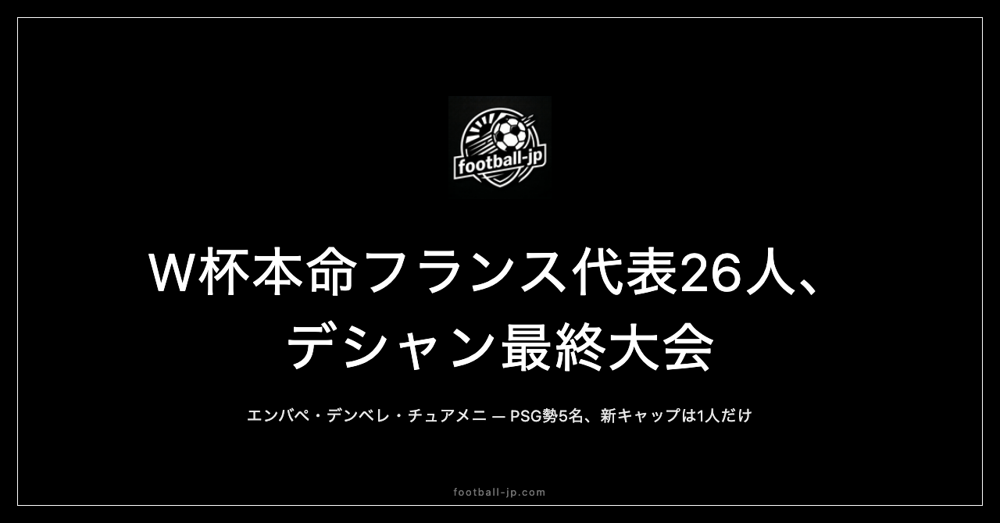

W杯本命フランス代表26人発表｜デシャン最終大会、PSG勢5名・新キャップは1人だけ
現地時間5月14日、ディディエ・デシャン監督がW杯2026フランス代表26名を発表した。26名中の新キャップはGKロビン・リッサー1人だけ。その厳格さが選考の完成度を示している。デシャン監督4度目のW杯指揮、そして退任前最後の集大成となる26名をポジション別に読み解く。

リーグ別分布：PSG勢5名という特異な構成
26名の所属クラブ別リーグ分布から確認する。
| リーグ | 人数 |
|---|---|
| 🇫🇷 フランス（リーグ・アン） | 8名 |
| 🏴 イングランド（プレミアリーグ等） | 8名 |
| 🇮🇹 イタリア（セリエA） | 4名 |
| 🇪🇸 スペイン（ラ・リーガ） | 3名 |
| 🇩🇪 ドイツ（ブンデスリーガ） | 2名 |
| 🇸🇦 サウジアラビア（サウジ・プロリーグ） | 1名 |
| 🇹🇷 トルコ（スュペル・リグ） | 1名 |
フランス国内の8名のうち5名がPSG所属。エンバペ（レアル・マドリード）、デンベレ（PSG）、バルコラ（PSG）、ザイール・エメリ（PSG）、ドゥエ（PSG）と、国内クラブが代表の顔ぶれを形成する特異な構成になっている。チャンピオンズリーグで欧州を戦い続けてきたPSGの戦術と連携が、フランス代表の土台に溶け込んでいる。
イングランド組の8名はプレミアリーグの複数クラブから分散して招集。アーセナルのウィリアン・サリバ、リバプールのイブラヒマ・コナテ、チェルシーのマロ・ギュスト、クリスタル・パレスのラクロワとマテタ、アストン・ビラのリュカ・ディニュ、マンチェスター・シティのラヤン・シェルキという顔ぶれだ。
26名の平均年齢はおよそ24歳台と若く、その中にエンバペ（27歳）やカンテ（35歳）が混在する構成。ドゥエ（20歳）、ザイール・エメリ（20歳）、シェルキ（22歳）と、次世代を担う若いタレントが主力に食い込んでいることも、このチームの厚みを語る上で外せない。
GK 3人：正GKメニャンの安定と唯一の新顔
GKはマイク・メニャン（ACミラン🇮🇹）が正GKとして揺るぎない地位にある。セリエAのミランで安定したパフォーマンスを続けており、空中戦の強さと足元の技術を兼ね備えた現代型のGKだ。フランス代表においても長らく正GKの座をキープしてきた。
2番手はブライス・サンバ（スタッド・レンヌ🇫🇷）。クラブでの安定した出場実績が評価されての選出。
3番手の招集となったのがロビン・リッサー（RCランス🇫🇷、2004年生まれ）。今回の26名で唯一の新キャップ候補だ。1月生まれでなく12月生まれ——つまり2004年の最後に生まれた選手がフル代表に初めて名を連ねるという事実が、フランス代表の若さを象徴している。
落選した選手としては、リュカ・シュヴァリエ（PSG）の名前が目立つ。怪我に加え、PSGでのポジション争いでGKサフォノフに正GKの座を奪われ、1月以降ほぼ出場機会がなかったことが大きな要因だ。
DF 9人：サリバ・コナテの軸とエルナンデス兄弟
DFラインはこの26名の中で最も安定感のある層だ。
中心はウィリアン・サリバ（アーセナル🏴）とイブラヒマ・コナテ（リバプール🏴）のプレミアリーグ組CBコンビ。サリバはアーセナルで今シーズンも圧倒的な存在感を示し、空中戦・対人守備・ビルドアップの質すべてにおいてトップクラスの水準にある。コナテはリバプールで経験を積み、フィジカルの強さと跳躍力を武器にするCBだ。この2枚が揃えば、グループステージのセネガル・イラク・ノルウェーに対して失点を計算できる。
ダヨ・ウパメカノ（バイエルン🇩🇪）は今シーズン、バイエルンの主力CBとしてブンデスリーガとCLを戦ってきた。フランス代表ではCBの3枚目として厚みを加える存在だ。
サイドバックはエルナンデス兄弟が柱。兄リュカ（PSG🇫🇷）は左SBとして長年フランス代表を支えてきた選手で、攻撃的なサイドバックとしての完成度は高い。弟テオ（アル・ヒラル🇸🇦）はサウジアラビアへ移籍後もフランス代表の不動のレギュラーで、左SBとしての突破力はそのままだ。右SBのマロ・ギュスト（チェルシー🏴）は2003年生まれ。ジュール・クンデ（バルセロナ🇪🇸）はCBとサイドバックを兼任できる万能DFだ。
MF 5人：チュアメニを軸にカンテとザイール・エメリ
中盤は5名のみの選出だ。その5人の質の高さが、少人数でも十分な理由を説明している。
軸はオーレリアン・チュアメニ（レアル・マドリード🇪🇸）。守備の強度・スペースの読み・ビルドアップへの参加の3つすべてをこなせるボランチとして、レアル・マドリードでも主力に定着した。フランス代表の中盤の心臓部を担い、攻守のバランスを保つ存在だ。
注目はワレン・ザイール・エメリ（PSG🇫🇷）。2006年生まれ、まだ20歳。PSGのアカデミー出身で昨シーズンからトップチームに定着し、今シーズンは主力に成長した。W杯のピッチで20歳のMFが90分を走り切る体力と判断力を持っているとしたら、それはフランスが持つ最大の武器の一つだ。
エンゴロ・カンテ（フェネルバフチェ🇹🇷）の選出はある意味でサプライズ。35歳になった今もフィジカルの衰えを感じさせないパフォーマンスをトルコで続けており、デシャンはその経験と読みの質を評価した。守備の効いたボランチとしての安心感、チームへの落ち着きをもたらす存在感は、フランス代表の中盤に不可欠だ。
FW 9人：エンバペ中心の新旧タレント構成
攻撃陣は9名で最も厚い層。エンバペを頂点に、新旧のタレントが入り交じった強力なラインナップだ。
主軸の4枚はキリアン・エンバペ（レアル・マドリード🇪🇸）、ウスマン・デンベレ（PSG🇫🇷）、マルクス・テュラム（インテル🇮🇹）、マイケル・オリーセ（バイエルン🇩🇪）の組み合わせ。この4枚が同時に機能したとき、相手DFは守備の設計を根本から変えなければならない。
新世代としてリストに加わったのが、ラヤン・シェルキ（マンチェスター・シティ🏴）、デジレ・ドゥエ（PSG🇫🇷）、ブラッドリー・バルコラ（PSG🇫🇷）、マグネス・アクリウシュ（ASモナコ🇫🇷）の4名。バルコラは今シーズンのPSGで突破力と得点力を示し、ドゥエはPSGで成長著しい20歳だ。
ジャン・フィリップ・マテタ（クリスタル・パレス🏴）の選出も見逃せない。ランダル・コロ・ムアニ（トッテナム）が落選する中でマテタが選ばれた形で、デシャンはプレミアリーグで結果を残してきたマテタの高さと決定力を評価した。
落選選手ではエドゥアルド・カマヴィンガ（レアル・マドリード/MF）の名前が最も話題になった。負傷と序列低下が重なった結果で、デシャン自身が「彼が私に腹を立てるのは当然」と語ったほどの難しい判断だった。
注目選手を深掘りする
キリアン・エンバペ（レアル・マドリード🇪🇸）
27歳、キャプテン。1998年カタール大会でフランスが優勝したのと同じ年に生まれた選手が、今大会でキャプテンマークを巻く。レアル・マドリード1年目を終えた今シーズン、スペインとCLの舞台でゴールを重ねてきた。トップスピードの速さと左足の精度は今も世界最高水準にある。
ウスマン・デンベレ（PSG🇫🇷）
28歳。PSGでのここ2シーズンは、バルセロナ時代の怪我がちなイメージを完全に塗り替えた。右サイドから内に切り込むドリブルと、予測しにくいパスコースの選択が武器だ。エンバペと同じPSGで呼吸が合っており、代表でも連動する場面は多い。
マイケル・オリーセ（バイエルン🇩🇪）
23歳。クリスタル・パレスからバイエルンへ移籍し、ブンデスリーガ初年度から主力に定着。右サイドの技術とシュートの精度が高く、ここ1〜2年でフランス代表の主力に急速に食い込んできた選手だ。2024年のパリ五輪ではフランスを銀メダルに導く活躍を見せており、今大会での飛躍が楽しみだ。
デジレ・ドゥエ（PSG🇫🇷）
2005年生まれ、20歳。PSGのアカデミー出身で、今シーズンのリーグ・アンで頭角を現した。左右どちらのサイドもこなせ、ドリブルと縦への仕掛けが得意な若いアタッカー。20歳でW杯のピッチに立つとすれば、この経験は彼の今後のキャリアを大きく動かすものになる。
優勝候補としての構造分析
フランスは今大会の優勝候補最上位グループに位置する。2018年ロシア優勝、2022年カタール準優勝——2大会連続で決勝ステージに立ったチームが、2018年・2022年の中核メンバーに新世代を加えた今の26名は攻撃の多様性が過去2大会より増している。
各層の厚みはポジション別に見ると際立つ。GKはメニャンという絶対的な軸を持つ。DFはサリバ・コナテのCBコンビを軸にエルナンデス兄弟・クンデ・ウパメカノと経験豊富なバックアップが並ぶ。MFはチュアメニ・カンテ・コネ・ラビオ・ザイール・エメリと性格の異なる5名が揃い、試合展開に応じた使い分けが可能だ。FWはエンバペを筆頭に9名を擁し、高さ・スピード・技術の組み合わせで相手守備の弱点を突ける構成になっている。
グループステージはセネガル・イラク・ノルウェー。セネガルは個人の質が高く油断はできないが、フランスがターンオーバーを使いながら3試合を通過できる可能性は高い。決勝トーナメントの対抗馬はスペイン・イングランド・ブラジル・アルゼンチンが想定される。
デシャンにとってこの大会は最後の指揮になる。2018年優勝から8年、現役世代の最高の選手たちが揃ったこの26名でもう一度頂点を目指す構図は見応えがある。